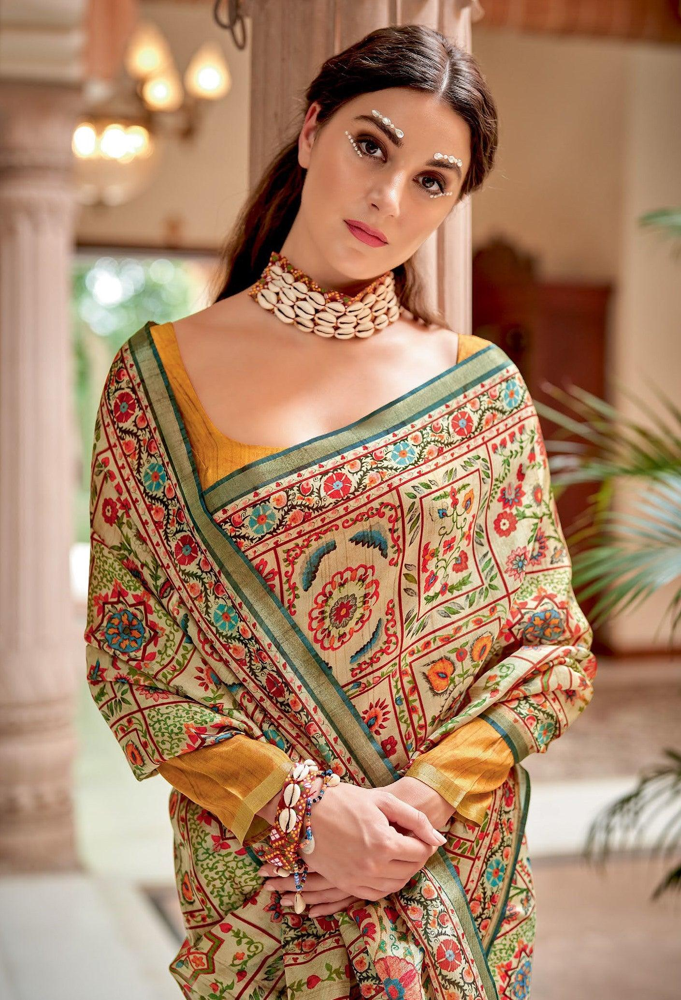

Banarasi art feels like luxury woven into every thread. The silk shines softly while gold and silver zari patterns glow with richness. The designs—floral vines, paisleys, and intricate motifs—flow across the fabric like a garden in bloom. The romance here is elegant and celebratory. These sarees are worn during weddings and special occasions, symbolizing beauty, tradition, and pride. It’s not just clothing—it’s a piece of heritage that carries emotion, status, and timeless grace.
Banarasi weaving originates from Varanasi (also called Banaras). • Developed during the Mughal period • Strongly influenced by Mughal designs (floral and intricate patterns) • Became famous as a luxury textile for royalty and nobility Traditionally: • Worn by brides in North India • Considered one of the finest silk textiles in India
Banarasi art is known for its intricate weaving process: • Handloom Weaving Entire design is woven, not printed • Zari Work (Gold & Silver Threads) Creates rich, shining patterns • Brocade Technique Extra threads are woven to form raised designs • Signature Motifs • Floral vines (inspired by Mughal gardens) • Paisley (boteh) • Jaal (net-like patterns) Fine Silk Fabric Gives smoothness and elegance
Banarasi sarees are made by skilled weavers in Varanasi. • Craft passed down through generations • Often a family-based profession • Weaving one saree can take weeks to months This makes each piece unique and valuable.